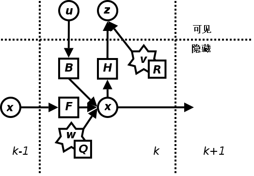
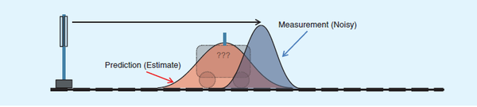

Kalman Filter (KF) 是一个高效的递归滤波器，它可以实现从一系列的噪声观测中，估计动态系统的状态。
1. 命名和发展历史
卡尔曼滤波器以它的发明者Rudolf. Emil. Kalman先生（2016年去世，向这位传奇的科学家致敬）而命名。
在控制领域，Kalman滤波被称为线性二次型估计。其也可以认为是一个最优化自回归数据处理算法（optimal recursive data processing algorithm）。
目前，卡尔曼滤波已经有很多不同的实现，有施密特扩展滤波器、信息滤波器以及一系列的Bierman和Thornton发明的平方根滤波器等，而卡尔曼最初提出的形式现在称为简单卡尔曼滤波器。也许最常见的卡尔曼滤波器应用是锁相环，它在收音机、计算机和几乎全部视频或通讯设备中广泛存在。
一个简单的应用是估计物体的位置和速度。简要描述如下：假设我们可以获取一个物体的包含噪声的一系列位置观测数据，我们可以获得此物体的精确速度和位置连续更新信息。例如，对于雷达来说，我们关心的是跟踪目标，而目标的位置、速度、加速度的观测值是时刻含有误差的，卡尔曼滤波器利用目标的动态信息，去掉噪声影响，获取目标此刻好的位置估计（即滤波过程），将来的位置估计（即预测过程），也可以是过去位置估计的（即插值或平滑过程）。
2. 应用举例
假设我们要研究的对象是一个房间的温度。根据你的经验判断，这个房间的温度是恒定的，也就是下一分钟的温度等于现在这一分钟的温度（假设我们用一分钟来做时间单位）。
假设你对你的经验不是绝对相信，可能会有上下偏差几度。我们把这些偏差看成是高斯白噪声（White Gaussian Noise，理想情况下我们以高斯噪声来进行假设估计），也就是这些偏差跟前后时间是没有关系的而且符合高斯分布（Gaussian Distribution）。
另外，我们在房间里放一个温度计，但是这个温度计也不准确的，观测值会比实际值偏差。我们也把这些偏差看成是高斯白噪声。好了，现在对于某一分钟我们有两个有关于该房间的温度值：你根据经验的预测值（系统的预测值）和温度计的值（观测值）。下面我们要用这两个值结合它们各自的噪声来估算出房间的实际温度值。
假如我们要估算$k$时刻的实际温度值。首先你要根据$k-1$时刻的温度值，来预测$k$时刻的温度。因为你相信温度是恒定的，所以你会得到$k$时刻的温度预测值是跟$k-1$时刻一样的，假设是23度，同时该值的高斯噪声的偏差是5度（5是这样得到的：如果$k-1$时刻估算出的最优温度值的偏差是3，你对自己预测的不确定度是4度，它们平方相加再开方就是5）。
然后，你从温度计那里得到了$k$时刻的温度值，假设是25度，同时该值的偏差是4度。由于我们用于估算$k$时刻的实际温度有两个温度值，分别是23度和25度。究竟实际温度是多少呢？相信自己还是相信温度计呢？究竟相信谁多一点，我们可以用它们的协方差（covariance）来判断。
因为$\mathit{Kg}^2= 5^2 / (5^2 + 4^2)$，所以$\mathit{Kg} = 0.78$，我们可以估算出$k$时刻的实际温度值是：$23 + 0.78 * (25-23) = 24.56$度。
可以看出，因为温度计的协方差比较小（比较相信温度计），所以估算出的最优温度值偏向温度计的值。
现在我们已经得到$k$时刻的最优温度值了，下一步就是要进入$k+1$时刻，进行新的最优估算。在进入$k+1$时刻之前，我们还要算出$k$时刻那个最优值（24.56度）的偏差。算法如下：$((1-\mathit{Kg})*5^2)^{0.5} = 2.35$。
这里的5就是上面的$k$时刻你预测的那个23度温度值的偏差，得出的2.35就是进入$k+1$时刻以后$k$时刻估算出的最优温度值的偏差（对应于上面的3）。就是这样，卡尔曼滤波器就不断的把协方差递归，从而估算出最优的温度值。它运行的很快，而且它只保留了上一时刻的协方差。
上面的$\mathit{Kg}$，就是卡尔曼增益（Kalman Gain），可以随不同的时刻而改变自己的值，后续会进一步说明其计算方法和数学意义。
3. 卡尔曼滤波器算法
卡尔曼滤波基于时域描述的线性动态系统，它的模型是马尔科夫链（Markov Chain），而马尔科夫链建立在一个被高斯噪声干扰的线性算子之上。
系统的状态可以用一个元素为实数的向量表示。随着离散时间的增加，这个线性算子就会作用到当前状态之上，产生一个新的状态，并且会带入一定的噪声，同时一些已知的控制信息也会加入。同时，另外一个受噪声干扰的线性算子将产生这些隐含状态的可见输出。
卡尔曼滤波器可以被看作为类隐马尔科夫模型，它们的显著不同点在于：
- 隐状态变量的取值空间是一个连续的空间，而不是离散的状态空间；
- 另外，隐马尔科夫模型可以描述下一个状态的一个任意分布，这也与应用于卡尔曼滤波器中的高斯噪声模型相反。
先看一下动态系统的基本模型。
动态模型
首先，我们先要引入一个离散控制过程的系统。该系统的过程模型可用一个线性随机微分方程（Linear Stochastic Difference Equation）来描述：
$x(k) = \mathbf{F} \cdot x(k-1) + \mathbf{B} \cdot u(k) + w(k)$
再加上系统观测模型：
$z(k) = \mathbf{H} \cdot x(k) + v(k)$
上两式子中，$x(k)$是$k$时刻的系统状态，$u(k)$是$k$时刻对系统的控制量。
$\mathbf{F}$和$\mathbf{B}$是系统参数，对于多模型系统，它们为转移矩阵。
$z(k)$是$k$时刻的观测值，$\mathbf{H}$是观测系统的参数，对于多观测系统，$\mathbf{H}$为矩阵。$w(k)$和$v(k)$分别表示过程和观测的噪声。它们被假设成高斯白噪声（White Gaussian Noise），它们的协方差分别是$\mathbf{Q}$，$\mathbf{R}$（这里我们假设它们不随系统状态变化而变化）。
卡尔曼滤波是一种递归的估计，即只要获知上一时刻状态的估计值以及当前状态的观测值就可以计算出当前状态的估计值，因此不需要记录观测或者估计的历史信息。
卡尔曼滤波器与大多数滤波器不同之处在于：它是一种纯粹的时域滤波器，它不需要像低通滤波器等频域滤波器那样，需要在频域设计再转换到时域实现。
卡尔曼滤波器的操作包括两个阶段：预测与更新：
- 在预测阶段，滤波器使用上一状态的估计，做出对当前状态的估计。
- 在更新阶段，滤波器利用对当前状态的观测值优化在预测阶段获得的预测值，以获得一个更精确的新估计值。
3.1 预测阶段
对于满足上面的条件（线性随机微分系统，过程和观测都是高斯白噪声），卡尔曼滤波器是最优的信息处理器。
下面我们来用它们结合它们的协方差来估算系统的最优化输出（类似上一节那个温度的例子）。首先，我们要利用系统的过程模型，来预测下一状态的系统。假设现在的系统状态是$k$，根据系统的模型，可以基于系统的上一状态而预测出现在状态：
$x(k \mid k-1) = \mathbf{F} \cdot x(k-1 \mid k-1) + \mathbf{B} \cdot u(k)$
上述公式称为预测的状态估计方程，其中，$x(k \mid k-1)$是利用上一状态预测的结果，$x(k-1 \mid k-1)$是上一状态最优的结果，$u(k)$为现在状态的控制量，如果没有控制量，它可以为0。
到现在为止，我们的系统结果已经更新了，可是，对应于$x(k \mid k-1)$的协方差（covariance）还没更新。我们用$P$表示协方差，它实际上描述了预测值的准确程度：
$P(k \mid k-1) = \mathbf{F} \cdot P(k-1 \mid k-1) \cdot \mathbf{F}^T + \mathbf{Q}_k$
上述公式称为预测的协方差矩阵估计方程，其中，$P(k \mid k-1)$是$x(k \mid k-1)$对应的协方差，$P(k-1 \mid k-1)$是$x(k-1 \mid k-1)$对应的协方差，$\mathbf{F}^T$表示$\mathbf{F}$的转置矩阵，$\mathbf{Q}$是系统过程的协方差。
上述两个公式就是对系统的预测。
3.2 更新阶段
在进行更新之前，我们先计算三个值：
首先是观测余量（measurement residual）：
$y(k) = z(k) - \mathbf{H} \cdot x(k \mid k-1)$
因为观测过程中存在一个观测误差的协方差矩阵，我们可以给出一个观测余量的协方差：
$S(k) = \mathbf{H}_k \cdot P(k \mid k-1) \cdot \mathbf{H}_k^T + \mathbf{R}_k$
接下来给出一个卡尔曼增益（Kalman Gain）：
$\mathit{Kg}(k) = P(k \mid k-1) \cdot \mathbf{H}^T \cdot S(k)^{-1} = P(k \mid k-1) \cdot \mathbf{H}^T \cdot (\mathbf{H} \cdot P(k \mid k-1) \cdot \mathbf{H}^T + \mathbf{R}_k)^{-1}$
现在我们有了现在状态的预测结果，然后我们再收集现在状态的观测值。结合预测值和观测值，我们可以得到现在状态$k$的最优化估算值$x(k \mid k)$：
$x(k \mid k) = x(k \mid k-1) + \mathit{Kg}(k) \cdot y(k)$
上述方程为更新的状态估计方程。
到现在为止，我们已经得到了$k$状态下最优的估算值$x(k \mid k)$。但是为了要使得卡尔曼滤波器不断的运行下去直到系统过程结束，我们还要更新$k$状态下$x(k \mid k)$的covariance：
$P(k \mid k) = ( \mathbf{I} - \mathit{Kg}(k) \cdot \mathbf{H}) \cdot P(k \mid k-1)$
上述方程成为更新的协方差矩阵估计方程，其中$\mathbf{I}$为单位矩阵，对于单模型单观测，$\mathbf{I} = 1$。当系统进入$k+1$状态时，$P(k \mid k)$就是预测方程中的$P(k-1 \mid k-1)$。这样，算法就可以自回归的运算下去。
4. 卡尔曼增益的意义
以上一直提到卡尔曼增益，那么其实际意义如何理解呢？我们结合一些数学知识来对其进行解释。
我们知道，卡尔曼滤波器对于随机变量的噪声，加入了高斯分布的假设，而这，也是能够对连续动态信息进行滤波的基础。
那么先从高斯分布开始：符合高斯分布的一个随机变量$X$具有一个平均值$\mu$和一个方差$D$。平均值$\mu$即数学期望$E[X]$，而方差$D = \sigma^2 = E[(x - E[x])^2]$，衡量随机变量或一组数据时离散程度的度量。$\sigma$即标准差或者均方差。正态分布的公式：
$\mathcal{N}(x, \mu, \sigma) = \frac{1}{\sigma \sqrt{2 \pi}} e^{-\frac{(x-\mu)^2}{2\sigma^2}}$
而两个随机变量$X$和$Y$的协方差可以写为：
$\text{cov}(X, Y) = E[(X - E[X])(Y - E[Y])]$
$= E[XY] - 2E[X]E[Y] + E[X]E[Y]$
$= E[XY] - E[X]E[Y]$
协方差衡量了随机变量间的相关程度。
高斯分布的一个重要性质是：互不相关的两个高斯分布相乘（相互叠加）后，仍然是一个正态分布！
并且新的正态分布的均值和方差满足：
$\mu’ = \mu_0 + k(\mu_1 - \mu_0)$
$\sigma’^2 = k\sigma_1^2 = \sigma_0^2(1-k)$
$k = \frac{\sigma_0^2}{\sigma_0^2 + \sigma_1^2}$
以上是单变量概率密度函数的计算结果，如果是多变量的，那么，就变成了协方差矩阵$\Sigma$的形式：
$\vec{\mu}’ = \vec{\mu}_0 + K(\vec{\mu}_1 - \vec{\mu}_0)$
$\Sigma’ = K\Sigma_1 = \Sigma_0(I-K)$
$K = \Sigma_0 + (\Sigma_0 + \Sigma_1)^{-1}$
再结合第三部分我们结合的卡尔曼滤波器算法，可以知道，此处卡尔曼增益正是此处的$K$。它正是用来计算当前两个高斯噪声叠加后的系统情况的。而为什么要进行叠加呢？
我们知道，两个事件的发生都是概率性的，不能完全相信其中的任何一个。如果具有两个事件，都发生的话，从直觉或者是理性思维上讲，两个事件同时发生的可能性越大，我们越相信它！要想考察它们同时发生的可能性，就是将两个事件单独发生的概率相乘。但是究竟是相信自己预测还是相信观测呢？我们可以用卡尔曼的方法来加权，即利用他们的方差$\sigma^2$来判断——求出绿色分布均值位置在红蓝均值间的比例，即卡尔曼增益。
红色分布为预测，蓝色分布为观测，绿色分布为二者的相乘
卡尔曼滤波器的理论基础，正是假定观测值和预测值的噪声都符合正态分布，且两个正态分布的融合仍是正态分布这一特性进行迭代的。
5. 结合算法模型的举例
5.1 物体运动状态估计
在算法模型的基础上，我们再进一步给出一个帮助理解的例子，是从[3]的页面上直接搬过来的：
考虑在无摩擦、无限长的直轨道上的一辆车。该车最初停在位置$0$处，但时不时受到随机的冲击。注意这里我们考虑没有外力的影响，因此忽略掉$\mathbf{B}_k$和$\mathbf{u}_k$。同时考虑$\mathbf{F}, \mathbf{H}, \mathbf{R}, \mathbf{Q}$为常数（此处不用下标）。
我们每$\Delta t$秒即测量车的位置，但是这个测量是非精确的；我们想建立一个关于其位置以及速度的模型。车的位置以及速度（或者更加一般的，一个粒子的运动状态）可以被线性状态空间描述如下：
$\mathbf{x_k} = \begin{bmatrix} x \\\ \dot{x} \end{bmatrix}$
这其中，$\dot{x}$是速度，即位置对时间的导数。
假设在$k-1$时刻和$k$时刻之间，车受到$a_k$的加速度，且符合均值为$0$，标准差为$\sigma_a$的正态分布。根据牛顿第一定理，我们推出：
$\mathbf{x}_k = \mathbf{F} \cdot \mathbf{x}_{k-1} + \mathbf{G} \cdot a_k$
其中，两个转移矩阵
$\mathbf{F} = \begin{bmatrix} 1 & \Delta t \\\ 0 & 1 \end{bmatrix}$, $\mathbf{G} = \begin{bmatrix} \Delta t^2/2 \\\ {\Delta t} \end{bmatrix}$
可知
$\mathbf{Q} = \text{cov}(\mathbf{G} \cdot a) = E[(\mathbf{G} \cdot a) \cdot (\mathbf{G} \cdot a)^{T}] = \mathbf{G} \cdot E[a^2] \cdot \mathbf{G}^T = \mathbf{G} \cdot \sigma_a^{2} \cdot \mathbf{G}^T$
每一个时刻我们都会对其进行一个测量过程，测量受到噪声干扰，我们依然假设噪声服从正态分布，均值为$0$，标准差为$\sigma_z$。
$z_k = \mathbf{H} \cdot x_k + v_k$
其中，我们有
$\mathbf{H} = \begin{bmatrix} 1 & 0 \end{bmatrix}$, $\mathbf{R} = E[v_k \cdot v_k^T] = \sigma_z^2$
我们先要提出一个假设初始值，假设车最初的位置和速度是足够准确的：
$x_{0 \mid 0} = \begin{bmatrix} 0 \\\ 0 \end{bmatrix}$
并且，告诉滤波器初始的测量是准确的，给出一个协方差矩阵：
$P_{0 \mid 0} = \begin{bmatrix} 0 & 0 \\\ 0 & 0 \end{bmatrix}$
如果我们不确切知道最初的位置与速度，协方差矩阵可以初始化为一个对角线元素为$B$的矩阵，$B$取一个比较大的数
$P_{0 \mid 0} = \begin{bmatrix} B & 0 \\\ 0 & B \end{bmatrix}$
接下来我们就可以给出$0 + \Delta_t$时刻对于车的状态的估计：
$x_{1 \mid 0}$ = $\begin{bmatrix} 1 & \Delta t \\\ 0 & 1 \end{bmatrix} \cdot \begin{bmatrix} 0 \\\ 0 \end{bmatrix}$ + $\begin{bmatrix} \Delta t^2/2 \\\ \Delta t \end{bmatrix} \cdot a_0$ = $\begin{bmatrix} a_0 \cdot \Delta t^2/2 \\\ \Delta t \cdot a_0 \end{bmatrix}$
上个公式中的$\begin{bmatrix} a_0 \cdot \Delta t^2/2 \\\ \Delta t \cdot a_0 \end{bmatrix}$也就是$0 + \Delta_t$时刻的位移和速度的估计。
接下来，我们还可以得到预测的估计协方差矩阵：
$P_{1 \mid 0}$ = $\begin{bmatrix} 1 & \Delta t \\\ 0 & 1 \end{bmatrix} \cdot \begin{bmatrix} 0 & 0 \\\ 0 & 0 \end{bmatrix} \cdot \begin{bmatrix} 1 & 0 \\\ \Delta t & 1 \end{bmatrix} + \begin{bmatrix} \Delta t^2/2 \\\ \Delta t \end{bmatrix} \cdot \sigma_a^2 \cdot \begin{bmatrix} \Delta t^2/2 & \Delta t \end{bmatrix}$ = $\sigma_a^2 \cdot \begin{bmatrix} \Delta t^4/4 & \Delta t^3/2 \\\ \Delta t^3/2 & {\Delta t}^2 \end{bmatrix}$
注意这个时候预测的估计协方差矩阵$P_{1 \mid 0}$相比$P_{0 \mid 0}$就大一些，这主要是由于预测过程带来的误差。
有了上述的两个预测值，假设我们得到了$0 + \Delta_t$时刻的估计值，因为假设$\mathbf{H} = \begin{bmatrix} 1 & 0 \end{bmatrix}$，我们在观测值上有：
$z_{1 \mid 1} = x_1$
也就是说只能观测到车的位置，不能观测到车的速度$\dot{x_1}$。
我们可以计算得到测量余量：
$y_{1 \mid 1} = x_1 - \begin{bmatrix} 1 & 0 \end{bmatrix} \cdot \begin{bmatrix} a_0 \cdot \Delta t^2/2 \\\ \Delta t \cdot a_0 \end{bmatrix} = x_1 - a_0 \cdot \Delta t^2/2$
有了测量余量，可以得到测量余量的协方差：
$S_{1 \mid 1} = \begin{bmatrix} 1 & 0 \end{bmatrix} \cdot P_{1 \mid 0} \cdot \begin{bmatrix} 1 \\\ 0 \end{bmatrix} + {\sigma_z}^2 = {\sigma_a}^2 \cdot \Delta t^4/4 + {\sigma_z}^2$
接下来，可以计算出卡尔曼增益：
$K_{1 \mid 1}$ = $P_{1 \mid 0} \cdot \begin{bmatrix} 1 \\\ 0 \end{bmatrix} / ({\sigma_a}^2 \cdot \Delta t^4/4 + {\sigma_z}^2)$ =
$\sigma_a^2 \cdot \begin{bmatrix} \Delta t^4/4 \\\ \Delta t^3/2 \end{bmatrix} / ({\sigma_a}^2 \cdot \Delta t^4/4 + {\sigma_z}^2)$
有了卡尔曼增益，我们可以更新$x_{1 \mid 1}$和$P_{1 \mid 1}$：
$x_{1 \mid 1}$ = $x_{1 \mid 0} + K_{1 \mid 1} \cdot y_{1 \mid 1}$ = $\begin{bmatrix} a_0 \cdot \Delta t^2/2 \\\ \Delta t \cdot a_0 \end{bmatrix} + \sigma_a^2 \cdot \begin{bmatrix} \Delta t^4/4 \\\ \Delta t^3/2 \end{bmatrix} / ({\sigma_a}^2 \cdot \Delta t^4/4 + {\sigma_z}^2) \cdot (x_1 - a_0 \cdot \Delta t^2/2)$
上述我们就做出了一个更新阶段的状态的估计，看到上述方程中只涉及到预测的变量和当前阶段的观测值，接下来是更新阶段的协方差矩阵估计：
$P_{1 \mid 1}$ = $(1 - K_{1 \mid 1} \cdot \begin{bmatrix} 1 & 0 \end{bmatrix} ) \cdot P_{1 \mid 0}$
= $\sigma_a^2 \cdot \begin{bmatrix} 1 - \Delta t^4/4 & 0 \\\ 1 - \Delta t^3/2 & 0 \end{bmatrix} / ({\sigma_a}^2 \cdot \Delta t^4/4 + {\sigma_z}^2) \cdot \sigma_a^2 \cdot \begin{bmatrix} \Delta t^4/4 & \Delta t^3/2 \\\ \Delta t^3/2 & {\Delta t}^2 \end{bmatrix}$
= ${\sigma_a}^4 / (16 \cdot ({\sigma_a}^2 \cdot \Delta t^4/4 + {\sigma_z}^2)) \begin{bmatrix} 4{\Delta t}^4 - {\Delta t}^8 & 8{\Delta t}^3 - 2{\Delta t}^7 \\\ 4{\Delta t}^4 - 2{\Delta t}^7 & 8{\Delta t}^3 - 4{\Delta t}^6 \end{bmatrix}$
5.2 算法流程抽象
公式是不是很复杂，但是只要你跟着流程来一趟，应该能够明白KF的整个过程。跑完这个例子之后，我们把整个流程抽象出来：
- 先决定当前系统的初始状态，并根据预测方程（过程模型）得到一个下一个时刻预测的状态；
- 根据预测方程中过程的误差，得到当前预测的协方差估计；
- 进入更新阶段，我们根据目前系统的观测值和上一个时刻预测的状态，从转换方程（观测模型）入手，得到一个测量余量；
- 根据转换方程和上个时刻预测的协方差估计，也可以得到一个测量余量的协方差估计；
- 根据1)测量余量的协方差$S_{k \mid k}$、2)转换方程$\mathbf{H}$和3)上个时刻的预测协方差估计$P_{k \mid k-1}$，我们得到卡尔曼增益$K_{k \mid k}$；
- 根据卡尔曼增益和测量余量，我们从预测的状态中更新优化当前的状态的值，而这个值可以用来预测下一个时刻的状态；
- 同样，我们根据1)卡尔曼增益$K_{k \mid k}$和2)上个时刻的预测协方差估计$P_{k \mid k-1}$，我们把当前更新阶段的协方差$P_{k \mid k}$估计也得到，帮助下一时刻的卡尔曼增益计算。
最后我们应该回过头来看看以上讲的房间温度的例子，来对比下这个过程。
6. 示例代码
给出一个matlab版本的小程序。
1 | N=200; |
7. 扩展阅读资料
可以查看[4]查看一个关于卡尔曼滤波器的教程，它对应的一个中文版本可见[5]。